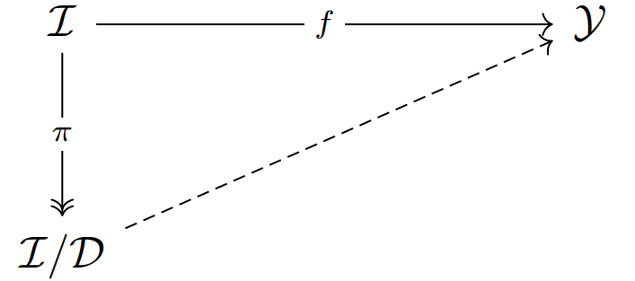
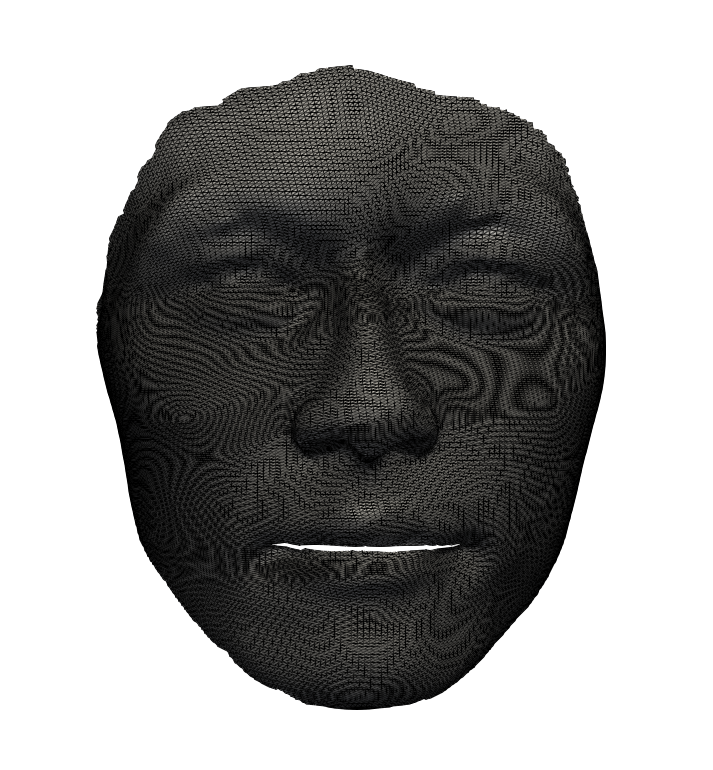

$\renewcommand{\Diff}{\mathcal{D}}\newcommand{\dist}{\mathrm{dist}}\renewcommand{\Imm}{\mathcal{I}}\newcommand{\Shape}{\mathcal{S}}\newcommand{\R}{\mathbb{R}}\newcommand{\vol}{\operatorname{vol}}\newcommand{\Vol}{\mathrm{Vol}}\newcommand{\Var}{V}$
<h4> Parameterization Invariant Representations<br> for Efficient Shape Learning </h4><hr> <p> <b>Emmanuel Hartman$^1$</b>, Emery Pierson$^2$, Martin Bauer$^3$, Nicolas Charon$^1$<br> <br>$^1$Department of Mathematics, University of Houston<br> $^2$ LIX, Ecole Polytechnique, France<br> $^3$Department of Mathematics, Florida State University<br></p><hr><p> 11 February 2025 </p> <div class="row"> <div class="col-md-6" align="left" markdown="1"> </div> <div class="col-md-6" align="right" markdown="1"> <img src="figs/esi_logo.png" width="60%" /> </div> </div>
<h4 align="left">Shape Learning</h4><hr> <div class="row"> <div class="col-md-7" align="left" markdown="1"> <p>Consider a space of parameterized objects $\Imm$ acted on by a group of reparameterizations $\Diff$. The goal of <b>shape learning</b> is to approximate a function $f:\Imm \to \mathcal{Y}$ such that $f$ is <b>invariant</b> to the action of $\Diff$. i.e. $$\text{if } \exists \gamma\in\Diff \text{ s.t. } q_1 = q_2 \circ \gamma, \quad f(q_1)=f(q_2).$$</p> <p>One goal of shape learning is to ensure our approximation of $f$ maintains the desired invariance property.</p> </div> <div class="col-md-5" align="center" markdown="1">  </div> </div> <hr> <div class="row"> <div class="col-md-7" align="left" markdown="1"> <p>Classification: $\mathcal{Y} = \R^C$</p><br> <img src="figs/humanbodies.png" width="55%"/> </div> <div class="col-md-5" align="left" markdown="1"> <p>Reconstruction: $\mathcal{Y} = \mathcal{I}$</p> </div> </div>
<h4 align="left">Parameterization Invariant Latent Space Representations</h4><hr> <div class="row"> <div class="col-md-8" align="left" markdown="1"> <p>We utilize a parameterization invariant latent space representation, $E:\Imm\to \mathcal{L} = \R^m$ so that $E$ is invariant to the action of $\Diff$. <br><br>For a well chosen (or learned) representation we can learn a function $g:\mathcal{L}\to \mathcal{Y}$ such that $$g\circ E \approx f.$$</p> <p>Other than ensuring parameterization invariance, why decompose the problem in this way?</p> <div class="col-md-1" align="left" markdown="1"></div> <div class="col-md-11" align="left" markdown="1"> <p class="fragment fade-left">+ $E$ can be designed to not depend on the dimensionality of the discetization of data from $\Imm$</p> <p class="fragment fade-left">+ $\mathcal{L}$ is typically of lower dimension than the input data</p> <p class="fragment fade-left">+ learning $g$ is "easier" than learning $f$ directly</p> <p class="fragment fade-left">+ improved generalizability compared to learning $f$ diectly</p> </div> </div> <div class="col-md-4" align="left" markdown="1"> </div> </div>
<h4 align="left">PointNet[1] and similar methods for point clouds</h4><hr> <div class="row"> <p>In the context of 3D pointclouds, we consider $\Imm = \{q:\{1,2,..,n\} \to \R^3\}$ and the group of reparameterizations $\Diff = S_n$ is the symmetric group on $n$ elements.</p><br><br> <div class="col-md-7" align="left" markdown="1"> <p>To learn a parameterization invariant representation of pointclouds PointNet learns a function $m: \R^3 \to \R^{1024}$ and considers $E:\Imm \to \R^{1024}$ given by $$E(q) = \sum_{i=1}^n m\circ q(i).$$ </p><br> <p>By the symmetry of addition, $E$ is invariant to the action of $S_n$. Alternatively, other symmetric functions (i.e max pooling) can be used.</p> </div> <div class="col-md-5" align="left" markdown="1"> <img src="figs/PointNet_Overview.png" width="100%"/> </div> <p align="left"><sub>$^1$ Qi et. al. "PointNet: Deep Learning on Point Sets for 3D Classification and Segmentation."</sub><br> </div>
<h4 align="left">Pitfalls for Using These Approaches on Continuous Data</h4><hr> <div class="row"><p>For the remainder of the talk, we will consider surface data.<br> In this context, we fix a template 2-manifold $M$ and consider parameterized objects as $\Imm = \operatorname{Imm}(M,\R^3)$ and the group of reparameterizations as $\Diff= \operatorname{Diff}(M)$.</p><br><br> <div class="col-md-9" align="left" markdown="1"><br> <p class="fragment fade-left">+ These frameworks ignore the connectivity triangular mesh discretizations of surface data and learn based exclusively on the vertices.<br><br></p><br> <p class="fragment fade-left">+ The feature vector architectures discussed previously are designed to be invariant to the action of $S_n$ on a point cloud and are NOT invariant to the action of $\operatorname{Diff}(M)$.<br></p> </div> <div class="col-md-3" markdown="1"> </div> <p class="fragment fade-left">Despite this, several frameworks (i.e. 3DCoded$^1$) exist using these methods on point cloud discretizations of continuous data.<br></p> </div> <p align="left"><sub>$^1$Groueix, et al. "3D-CODED : 3D Correspondences by Deep Deformation."</sub><br>
<h4 align="left">Parameterization Invariant Representations from Geometric Measure Theory$^{1,2,3,4}$</h4><hr> <div class="row"> <div class="col-md-8" markdown="1" align="left"> <p>For any $q\in \Imm$ we can associate a varifold $\mu_q\in\mathcal{M}(\mathbb R^3\times S^{2})$ as the push forward measure $\mu_q:= (q,n_q)_*\operatorname{vol}_q$ where $n_q$ is the unit normal map of $q$. In particular, for any $\gamma\in\Diff$, $\mu_{q\circ\gamma} = \mu_q$.</p><br> <p class="fragment" data-fragment-index="1"><br>Unfortunately, to represent the varifold associated with an objects with a fixed finite dimension requires solving a quantization problem.</p><br> <p class="fragment" data-fragment-index="2"> <br>To avoid this problem, we will first need a distance function on the space of varifolds. We will equip $\mathcal{M}(\mathbb R^3\times S^{2})$ with the an RKHS norm $\|\cdot\|_{V}$ where for $\mu_{q}$ and $\mu_{p}$ the scalar product can be written as: \begin{equation*}\label{equ:norm_var} \langle \mu_{q},\mu_{p}\rangle_{V}=\iint_{M \times M}e^{-\alpha||q(x)-p(y)||^2}\langle n_q(x), n_p(y)\rangle^2\vol_{q}(x) \vol_{p}(y). \end{equation*}</p> </div> <div class="col-md-4" markdown="1" align="right"><img src="figs/Face_downsampled.png" width="40%" /><hr><img src="figs/varifold_similar.png" width="100%" /></div> <p align="left"><sub>$^1$Charon & Trouvé. "The varifold representation of nonoriented shapes for diffeomorphic registration."</sub><br> <sub>$^2$Kaltenmark, et al. "A general framework for curve and surface comparison and registration with oriented varifolds."</sub><br> <sub>$^3$Feydy et al. "Optimal transport for diffeomorphic registration"</sub><br> <sub>$^4$ Roussillon & Glaunès. "Representation of surfaces with normal cycles and application to surface registration."</sub><br></p> </div>
<h4 align="left">Varifold Gradient For Representing Shapes</h4><hr> <div class="row" align = "left"> <p> To construct parameterization invariant representations of shapes with fixed dimension we consider the following setup. Consider a template $\mathcal{T}\in \Imm$ discretized by a triangular mesh with $M$ vertices and define the following operator: </p> <div class="col-md-12" markdown="1" align="center"> <p>$$\begin{align}\operatorname{VariGrad}:\Imm&\to\R^{3M}\\ q&\mapsto \nabla_{\vec{0}}\|\mu_q - \mu_{\mathcal{T} + (\cdot)}\|_V^2 = C - 2 \nabla_{\vec{0}}\langle\mu_q , \mu_{\mathcal{T}(\cdot)}\rangle.\end{align}$$<br></p> <div> <div class="col-md-6" markdown="1" align="left"> <p class="fragment fade-left">+ $\operatorname{VariGrad}(q)$ is a vector field on $\mathcal{T}$ and thus has fixed dimension $3M$ independent of the dimensionality of our mesh represeentation of $q$. <br><br></p> <p class="fragment fade-left">+ Intuitively, this gives a first order approximation of how to deform $\mathcal{T}$ into the same shape as $q$. <br><br></p> <p class="fragment fade-left">+ Due to the properties of varifolds, it is parameterization blind and robust to imaging noise. <br><br></p> </div> <div class="col-md-6" markdown="1" align="center"><br></div> </div>
<h4 align="left">Varifold Gradient with Latent Space Models</h4><hr> <div class="row"><p>We propose a modification to the VariGrad framework for latent space parameterizations of shapes of a particular modality. For this talk in particular we will consider models that parameterize the space of human bodies. <br><br></p> <div class="col-md-6" markdown="1" align="left"> <p class="fragment fade-left">+ Consider an existing (frozen) latent space model $G:\R^m\to\mathcal{S}$. <br><br></p> <p class="fragment fade-left">+ $\operatorname{VariGrad}_G$ computes the varifold gradient with respect to the parameters of $G$. <br><br></p> <p class="fragment fade-left">+ Intuitively, this $m$-dimensional vector gives a first order approximation of a latent code $v$ such that $G(v)$ is the same shape as $q$. <br></p></div> <div class="col-md-6" markdown="1" align="center"><br></div> </div>
<h4 align="left"> Training the Reconstruction Model</h4><hr> <div class="row"> <p>For frozen latent space model $G$ we train an MLP to predect the parameters that $G$ maps to the same shape as $q$ with fixed point to point correspondances. </p> </div> <p>We separate the registered DFAUST human bodies dataset into registered testing and training sets as well as take a set of unregistered DFAUST data to evaluate generalizability.</p>
<h4 align="left">VariGrad Results</h4><hr> <div class="row"> <p>We then test the model on the unseen testing set of registered data as well as an unseen testing set of unregistered scans of human bodies.</p><br><br> <div class="col-md-6" markdown="1" align="left"><span class="fragment fade-left"></span><br><br><span class="fragment fade-left"></span><br></div> <div class="col-md-6" markdown="1" align="left"><span class="fragment fade-left"></span><br><br><span class="fragment fade-left"></span><br></div> <p align="left"><sub>$^{13}$Groueix, et al. "3D-CODED : 3D Correspondences by Deep Deformation."</sub><br> </div>
<h4 align="left">VariGrad for Clustering and Classification</h4><hr> <div class="row"> <p>We consider a dataset of 3D surfaces representing left atrial appendages (LAA) of a large cohort (n=543) of patients. Several works have shown that morphological changes in the LAA are correlated to ischemic stroke[1,2].</p> <br><p>Previous works (i.e. [1]) have considered LAAs which are manually classified as one of four morphological types and shown there is significant difference in relative stroke rates of these clusters. </p> <div class="col-md-8" markdown="1" align="left"><br> <p>We perform two experiments using the varigrad representations of the LAA data set:</p><br><br> <p>+ we perform automatic clustering of the samples into 4 clusters and compare the relative rates of stroke across each cluster.</p><br><br> <p>+ we train a support vector classifier on the varigrad representations of 143 LAAs supervised with ground truth labels. We test the performance of this classifier on the remaining 400 patients to validate the model. </p> </div> <div class="col-md-4" markdown="1" align="center"> <br> <br> </div> </div> <div class="row" align = "left"> <p align="left"><sub>$^1$Biase et al. "Does the Left Atrial Appendage Morphology Correlate With the Risk of Stroke in Patients With Atrial Fibrillation?: Results From a Multicenter Study"<br></sub> <p align="left"><sub>$^2$ Ahmad et al. "Elastic shape analysis computations for clustering left atrial appendage geometries of atrial fibrillation patients"</sub> </div>
<h4 align="left">VariGrad for Clustering and Classification Results</h4><hr> <div class="row"> <div class="col-md-4" markdown="1" align="left"> <div class="fragment fade-left"> <p><b>Clustering:</b></p> <p>The automatic clustering based on the $L^2$ distance between varigrads produces similar clusters to the manual clustering with similar relative stroke rates across the clusters.</p> </div> </div> <div class="col-md-4" markdown="1" align="left"> <div class="fragment fade-left"> <p><b>Classification:</b></p> <p>The SVM classifier produces an accuracy of $83.5\%$ with $10.25\%$ false positives and $6.25\%$ false negatives. <br><br> Additionally, we can visualize the disciminant direction of the SVM model as a vector field on the template. This vector field can be interpreted as the type of deformation that leads to higher risk of ischemic stroke. </p> </div> </div> <div class="col-md-4" markdown="1" align="center"> <div class="fragment fade-left"> <br><br> </div> </div> </div>
<h4 align="left">Conclusion + Future Directions</h4><hr> <p align="left"> We discuss notions of parameterization invariant representations of objects for shape learning. In the case of surfaces we propose using the gradient of the varifold distance as parameterization invariant feature representations of this data. <br><br> </p><div class="row"> <div class="col-md-8" markdown="1" align="left"> <p class="fragment fade-left"> + We demonstrate the strength of this method in several deep learning applications.</p> <p class="fragment fade-left"> + Moreover, we show the sucess of these features for classic learning methods and discuss the interpretability of these results.</p> <p class="fragment fade-left"> - Show the sensitivity of the VariGrad representation with respect to the choice of template object.</p> <p class="fragment fade-left"> - Characterize the kernel of the varigrad operator to see what shapes the varigrad operator cannot distinguish.</p> <hr> <p><sub> This talk is based on:<br><a href="https://diglib.eg.org/handle/10.2312/3dor20231150">https://diglib.eg.org/handle/10.2312/3dor20231150</a><br> <a href="https://arxiv.org/pdf/2411.03475">https://arxiv.org/pdf/2411.03475</a><br> A Pytorch implementation VariGrad model for shape graphs is available at:<br> <a href="https://github.com/emmanuel-hartman/Pytorch_VariGrad">https://github.com/emmanuel-hartman/Pytorch_VariGrad</a><br> The slides for this talk are available at: <a href="https://emmanuel-hartman.github.io/Talks/Slides/VariGrad_Vienna/talk.html">https://emmanuel-hartman.github.io/Talks/Slides/VariGrad_Vienna/talk.html.</a> </sub></p> </div> <div class="col-md-4" markdown="1" align="center"> <br><br> <center><p class="fragment fade-left">Thank you to the organizers for inviting me to speak and thank you for your attention!</p></center>